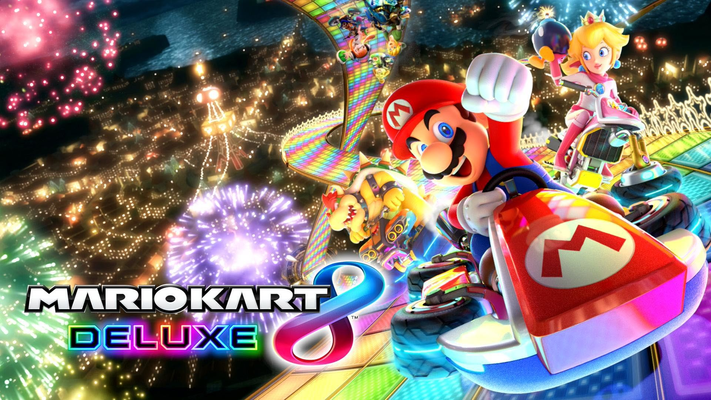

PLATFORME:

Personal Computer
PC, April 7, 2014
Mauris neque quam, fermentum ut nisl vitae, convallis maximus nisl. Sed mattis nunc id lorem euismod placerat. Vivamus porttitor magna enim, ac accumsan tortor cursus at. Phasellus sed ultricies mi non congue ullam corper. Praesent tincidunt sed tellus ut rutrum. Sed vitae justo condimentum, porta lectus vitae, ultricies congue gravida diam non fringilla.
Playstation 4
PS4, April 2, 2014
Mauris neque quam, fermentum ut nisl vitae, convallis maximus nisl. Sed mattis nunc id lorem euismod placerat. Vivamus porttitor magna enim, ac accumsan tortor cursus at. Phasellus sed ultricies mi non congue ullam corper. Praesent tincidunt sed tellus ut rutrum. Sed vitae justo condimentum, porta lectus vitae, ultricies congue gravida diam non fringilla.
Xbox One
XBONE, April 2, 2014
Mauris neque quam, fermentum ut nisl vitae, convallis maximus nisl. Sed mattis nunc id lorem euismod placerat. Vivamus porttitor magna enim, ac accumsan tortor cursus at. Phasellus sed ultricies mi non congue ullam corper. Praesent tincidunt sed tellus ut rutrum. Sed vitae justo condimentum, porta lectus vitae, ultricies congue gravida diam non fringilla.
Nintendo Switch
SWITCH, April 2, 2014
Mauris neque quam, fermentum ut nisl vitae, convallis maximus nisl. Sed mattis nunc id lorem euismod placerat. Vivamus porttitor magna enim, ac accumsan tortor cursus at. Phasellus sed ultricies mi non congue ullam corper. Praesent tincidunt sed tellus ut rutrum. Sed vitae justo condimentum, porta lectus vitae, ultricies congue gravida diam non fringilla.
Ce reprezintă o platformă?
Termenul joc pe calculator sau "joc pe PC" se referă la un joc care este jucat pe un PC, unde monitorul este principalul mijloc de feedback și care folosește ca dispozitiv de control un periferic de intrare, de obicei butonarea unui joystick (jocuri din arcade-uri), o combinație tastatură & maus/trackball sau un controller, ori o combinație dintre cele de mai sus. Jocuri pe calculator sunt denumite și jocurile în mod text sau jocuri care folosesc și alte metode care includ sunetul sau vibrația ca principalul mijloc de feedback, dar in momentul actual apar prea puține jocuri noi care intră în aceste categorii. Termenul "Joc pentru consolă" se referă la un joc care este jucat pe un sistem conceput special pentru aceasta, sistem care poate fi conectat la un televizor sau la un monitor. Denumirea de "joc video" poate fi folosită și pentru a descrie software făcut și pentru alte dispozitive: telefoanele mobile, PDA, calculatoare științifice performante, ceasuri electronice, camere video digitale, aparate foto digitale, MP3 playere.
Poate te interesează și alte informații
-
 Exemple
Exemple
Jocuri apreciate de către critici -
 Genuri
Genuri
Jocuri casual, jocuri serioase și jocuri educaționale -

Topuri
În fiecare an, jocurile cele mai apreciate de către critici sunt încadrate în diferite topuri.